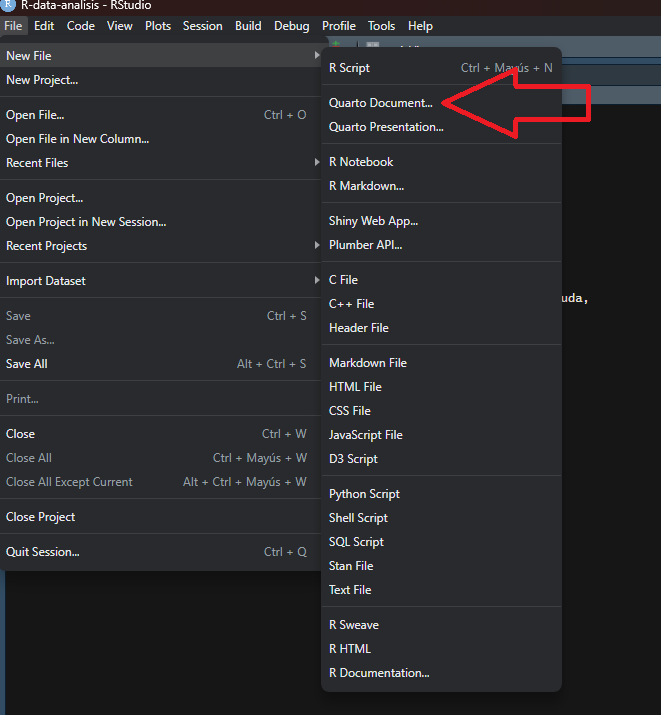
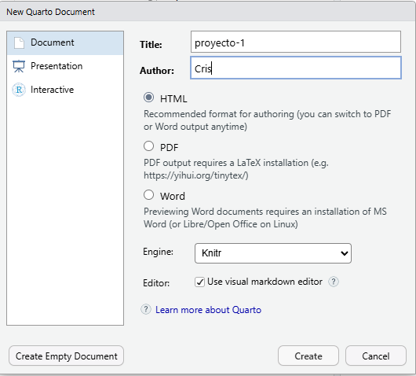
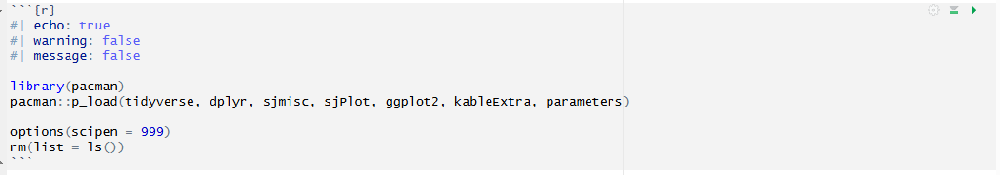

pacman::p_load(tidyverse, sjmisc, sjPlot)Sesión 4: Documentos dinámicos y Quarto
Métodos Cuantitativos para la Administración Pública
1 ¿Por qué documentos dinámicos?
En el trabajo cuantitativo, el flujo habitual consiste en correr código en R, copiar resultados a un procesador de texto, ajustar manualmente tablas y gráficos, y repetir el ciclo cada vez que algo cambia. Este proceso es lento, propenso a errores y dificulta la reproducibilidad: la capacidad de que cualquier persona pueda llegar exactamente a los mismos resultados a partir de los mismos datos y procedimientos.
Los documentos dinámicos resuelven este problema al integrar en un solo archivo el texto, el código y los resultados del análisis. Si los datos cambian, el documento se actualiza automáticamente al renderizarlo.
1.1 Reproducibilidad
Un análisis es reproducible cuando:
- El código fuente está disponible y documentado.
- Los datos de entrada están accesibles o descritos con precisión.
- El entorno de trabajo (paquetes, versiones) está registrado.
- Cualquier persona puede llegar al mismo resultado siguiendo los mismos pasos.
1.2 Markdown vs. Quarto
| Concepto | Descripción |
|---|---|
| Markdown | Texto plano con marcas mínimas de formato (.md). Solo texto y estructura. |
| R Markdown | Markdown con código R ejecutable (.Rmd). Específico para R. |
| Quarto | Sistema moderno y multilenguaje (R, Python, Julia) para documentos dinámicos (.qmd). Estándar del curso. |
2 Nuestro primer archivo .qmd
2.1 Creación del archivo
- File → New File → Quarto Document…

- Escribimos un título y autor/a, y hacemos clic en Create.

2.2 Escritura en Markdown
Todo el texto de un archivo .qmd se escribe en Markdown.
| Código | Resultado |
|---|---|
**negrita** |
negrita |
*cursiva* |
cursiva |
# Título 1 |
Encabezado de nivel 1 |
## Título 2 |
Encabezado de nivel 2 |
[texto](https://www.markdownguide.org/) |
texto |
 |
|
> cita |
cita en bloque |
- ítem |
lista |
1. ítem |
lista numerada |
2.3 Código: los chunks
Para escribir código en un documento Quarto creamos un chunk: con Ctrl + Alt + I o en Code → Insert Chunk.

- Los chunks comienzan y terminan con tres comillas invertidas (
```). {r}indica el lenguaje: en este caso, R.- Las opciones se escriben al inicio del chunk con
#|. Si no se indica nada, se aplican los valores por defecto.
| Opción | Descripción |
|---|---|
echo |
Muestra u oculta el código |
eval |
Ejecuta o no el código |
output |
Incluye o excluye los resultados |
warning |
Muestra u oculta advertencias |
message |
Muestra u oculta mensajes |
include |
Suprime código y resultados a la vez |
label |
Identifica el chunk para referencias cruzadas |
fig-cap |
Título para gráficos (con label: fig-...) |
tbl-cap |
Título para tablas (con label: tbl-...) |
2.4 Referencias cruzadas
- Etiqueta: las tablas llevan
label: tbl-nombrey los gráficoslabel: fig-nombre. Así Quarto las numera. - Referencia: en el texto se escribe
@tbl-nombrey Quarto lo reemplaza por “Tabla 1”, “Tabla 2”, etc. La numeración depende del orden de aparición en el documento. - Texto personalizado:
[ver resumen de datos](#tbl-nombre)crea un enlace con el texto que elijas.
Tip
Haz todo el procesamiento en un chunk al inicio del documento y guarda los resultados en objetos. Luego, donde quieras que aparezca cada tabla, crea un chunk pequeño con solo el label, el tbl-cap y el nombre del objeto.
3 Aplicación práctica: estatus social subjetivo
3.1 Preparación
Un chunk sin opciones muestra todos los mensajes al cargar paquetes:
Para ocultarlos agregamos #| message: false y #| warning: false:
pacman::p_load(tidyverse, sjmisc, sjPlot, knitr)3.2 Carga de datos
load(url("https://github.com/Cristobal-Mejias-G/metodos-cuantitativos-fagob/raw/main/datos/issp_2009_chile.RData"))glimpse(issp)Rows: 1,505
Columns: 12
$ sex <fct> 1, 1, 1, 2, 2, 1, 2, 1, 2, 1, 1, 2, 1, 1, 1, 1, 2, 2, 1,…
$ age <dbl> 23, 33, 36, 65, 20, 19, 41, 42, 50, 47, 21, 55, 58, 35, …
$ educyrs <dbl> 12, 13, 7, 6, 13, 13, 13, 10, 13, 22, 12, 6, 8, 10, 8, 1…
$ income <dbl> 5, 5, 7, 3, 1, 5, 9, 1, 5, 10, 8, 1, 6, 6, 9, 9, 1, 4, 9…
$ topbot <dbl> 5, 5, 5, 6, 6, 4, 5, 6, 4, 6, 4, 6, 4, 1, 3, 5, 2, 5, 4,…
$ pref_redis <dbl> 1, 4, 5, 2, 5, 4, 4, 3, 4, 3, 4, 4, 4, 4, 4, 3, 4, 4, 4,…
$ perc_ineq <dbl> 3, 5, 5, 4, 5, 4, 5, 5, 5, 4, 5, 2, 2, 4, 5, 2, 4, 4, 4,…
$ conflict_rp <dbl> 4, 1, 4, 3, 3, 2, 2, 2, 3, 2, 3, 1, 1, 3, 2, 4, 3, 3, 2,…
$ conflict_wcmc <dbl> 3, 2, 4, 3, 3, 1, 3, 1, 3, 1, 2, 1, 3, 3, 1, 2, 2, 3, NA…
$ conflict_mw <dbl> 1, 3, 4, 2, 4, 3, 3, 3, 3, 2, 3, 1, 4, 3, 2, 2, 2, 3, 3,…
$ conflict_tb <dbl> 4, 1, 3, 3, 3, 2, 3, 2, 3, 1, 1, 2, 4, 3, 2, 4, 3, 4, 3,…
$ perc_conflict <dbl> 8, 3, 11, 7, 9, 4, 7, 4, 8, 2, 5, 1, 8, 8, 3, 8, 6, 9, N…3.3 Tabla descriptiva
descr(issp, show = c("label", "range", "mean", "sd", "NA.prc", "n")) |>
kable(digits = 2)| var | label | n | NA.prc | mean | sd | range | |
|---|---|---|---|---|---|---|---|
| 11 | sex | Sexo | 1505 | 0.00 | 1.58 | 0.49 | 1 (1-2) |
| 1 | age | Edad | 1505 | 0.00 | 46.56 | 17.64 | 73 (18-91) |
| 6 | educyrs | Nivel educativo | 1451 | 3.59 | 10.76 | 4.41 | 24 (1-25) |
| 7 | income | Decil ingreso | 1146 | 23.85 | 5.49 | 2.87 | 9 (1-10) |
| 12 | topbot | Estatus social subjetivo | 1490 | 1.00 | 4.03 | 1.66 | 9 (1-10) |
| 10 | pref_redis | Preferencia por redistribución | 1477 | 1.86 | 3.83 | 0.88 | 4 (1-5) |
| 9 | perc_ineq | Percepción desigualdad | 1492 | 0.86 | 4.19 | 0.83 | 4 (1-5) |
| 3 | conflict_rp | Conflictos: ricos - pobres | 1438 | 4.45 | 2.61 | 0.87 | 3 (1-4) |
| 5 | conflict_wcmc | Conflictos: clase trabajadora - clase media | 1426 | 5.25 | 2.29 | 0.90 | 3 (1-4) |
| 2 | conflict_mw | Conflictos: directivos - trabajadores | 1427 | 5.18 | 2.71 | 0.83 | 3 (1-4) |
| 4 | conflict_tb | Conflictos: gente de arriba - gente de abajo | 1425 | 5.32 | 2.66 | 0.90 | 3 (1-4) |
| 8 | perc_conflict | Percepción conflictos | 1390 | 7.64 | 6.30 | 2.79 | 12 (0-12) |
La Tabla 1 resume las variables con las que trabajaremos.
3.4 Modelos de regresión lineal
modelo_1 <- lm(topbot ~ educyrs, data = issp)
modelo_2 <- lm(topbot ~ educyrs + income, data = issp)tab_model(
modelo_1, modelo_2,
show.ci = FALSE,
show.se = TRUE,
dv.labels = c("Modelo 1", "Modelo 2"),
pred.labels = c("(Intercepto)", "Años de educación", "Decil de ingreso")
)| Modelo 1 | Modelo 2 | |||||
|---|---|---|---|---|---|---|
| Predictors | Estimates | std. Error | p | Estimates | std. Error | p |
| (Intercepto) | 2.45 | 0.11 | <0.001 | 2.14 | 0.13 | <0.001 |
| Años de educación | 0.15 | 0.01 | <0.001 | 0.12 | 0.01 | <0.001 |
| Decil de ingreso | 0.11 | 0.02 | <0.001 | |||
| Observations | 1440 | 1099 | ||||
| R2 / R2 adjusted | 0.162 / 0.161 | 0.190 / 0.189 | ||||
3.5 Visualización
ggplot(issp, aes(x = educyrs, y = topbot)) +
geom_jitter(alpha = 0.2, color = "#40666e", width = 0.3, height = 0.3) +
geom_smooth(method = "lm", color = "#D49A3B", linewidth = 1.2) +
labs(
x = "Años de educación",
y = "Estatus social subjetivo (1–10)",
caption = "Fuente: elaboración propia en base a ISSP 2009."
)`geom_smooth()` using formula = 'y ~ x'Warning: Removed 65 rows containing non-finite outside the scale range
(`stat_smooth()`).Warning: Removed 65 rows containing missing values or values outside the scale range
(`geom_point()`).
La Figura 1 muestra la asociación positiva entre años de escolaridad y estatus percibido.
4 De documento a presentación
El mismo archivo puede convertirse en distintos formatos cambiando el YAML.
| Formato | YAML |
|---|---|
| Documento HTML | format: html |
| Word | format: docx |
| Presentación | format: revealjs |
En una presentación, los encabezados # y ## crean diapositivas automáticamente. También se puede usar --- para separarlas manualmente.
format:
revealjs:
theme: simple
slide-number: true
incremental: true
Nota
Las presentaciones de estas ayudantías están hechas así: cada una es un .qmd con format: fagob-revealjs. Puedes ver su código en el repositorio.